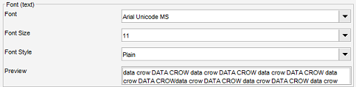

Fonts
Menu path: Settings > Settings > Font
You can set the font for text (the values of an item) and for the labels (the field names and other system texts)
independent of each other. You can choose the Font type, the size and the style (bold, italic, plain).
Font Rendering Method
This is a bit of a technical part. Important to know is that this setting determines how the fonts are shown on screen
(rendered). If you have a laptop choose one of the LCD flavours from the dropdown.
Try one of the settings and press "Save" to apply. You can always switch back to default in case you are unsure.
Font Settings
Within Data Crow two different fonts are used, fonts for displaying text and fonts used for labels and buttons (etc).

You can select the font type, size and style (bold and or italic). A sample of the selected settings is shown on
lower part. Once you are happy with your settings press "save" to apply them.
Foreign Character support
Data Crow supports Chinese, Japanese and other non ISO-8859-1 character sets (it supports Unicode / UTF-8 characters).
To get this working however the Font you selected must support this as well. For Windows systems the best
character sets to use are the ones having "Unicode" in the name, such as "Arial Unicode MS".